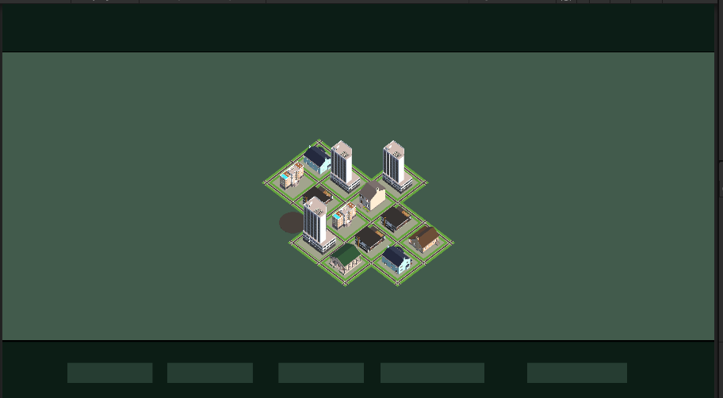

건물을 조밀하게 모으고 이웃 연결에 따라 도로를 회전·교체하도록 수정했습니다. 맨땅·하늘·UI 폰트 연결을 추가했으며 실제 화면 재확인은 미실행입니다.
v1.0.0수정사항
작업 결과
사용자가 제공한 화면에서 버튼 글자가 보이지 않는 상태를 확인했습니다. 기존 씬과 코드를 수정하여 2×2 건물 블록, 연결 방향별 도로, 흙·마른 풀 지면, 하늘을 보는 투시 카메라와 UI 폰트 연결을 작성했습니다. 실제 수정 후 화면은 아직 확인하지 않았습니다.
변경 내용
적용 내용
버튼 역할: 일반 폭탄, 핵폭탄, 일시정지, 성장 속도, 도시 초기화. 기존 Text 오브젝트에 Unity 6 LegacyRuntime 폰트를 명시적으로 연결합니다. 글자 누락의 정확한 원인은 화면만으로 확정하지 않았습니다.\n- 건물 중심 간격을20→16으로 줄이고, 건물마다 도로를 두르던 방식을2×2 건물 블록의 공용 도로로 변경했습니다. 건물 최대 높이도 구역 크기의2.2배로 제한했습니다.\n- 도로는 N/E/S/W 연결 비트를 계산해 직선·코너·T자·십자·끝길 에셋과 회전을 선택합니다. 도시 성장·파괴·재건마다 기존 교차점도 다시 계산합니다.\n- 제공 에셋의 실제 차량 경로 끝점에서 기본 방향을 확인했습니다. 직선NS, 코너NW, T자NEW, 끝길N 기준입니다. 보행 경로와 구분했습니다.\n- 지면은 프로젝트 소유 URP 셰이더로 흙·마른 풀 얼룩과 작은 표면 변화, 그림자·안개를 표현하도록 작성했습니다. 새 래스터 이미지 제작은 없습니다.\n- 카메라는 하늘이 화면 위쪽에 들어오도록27도 투시 시점으로 변경하고 실제 도시 범위의8개 꼭짓점을 기준으로 거리를 조절합니다. Skybox와 Sun Source를 사용하며 먼 지면은 안개로 이어지게 합니다.\n\n

수정 전 — 사용자가 제공한 화면, 버튼 글자 미표시와 기존 구역 배치\n\n수정 후 스크린샷은 컴퓨터 유즈 금지 조건으로 촬영하지 않았습니다. 따라서 전후 시각 비교 검증 완료로 표시하지 않습니다.
검증
실행 결과: 독립 .NET 시나리오24개 통과. 기존 성장·파괴·점수·재건16개에 도로 방향15개 조합, 공유 도로, 이웃 성장 시T자 전환, 음수 좌표 블록, 축소 시코너 복구,4개 블록 중앙 십자, 전멸 시고아 도로 제거 검사를 추가했습니다. Runtime·Editor C#은 설치된 Unity6000.0.83f1 참조 라이브러리로 컴파일 통과했습니다.\n\n씬 정적 검사:121개 직렬화 오브젝트,243개 로컬 참조,57개 외부 참조 및5개 버튼 이벤트 확인. 추가 도로3종, 지면 셰이더 GUID, 투시·Skybox 설정과 폰트 바인딩 코드를 확인했습니다. 원본5,840개 파일 해시 변경0건입니다.\n\n씬 생성 중 이전 SampleScene이 더 이상 없는 것을 실제 파일 조회로 확인했습니다. 이를 복원하지 않고, 보관한 기존 시제품 씬의 카메라·조명·환경 부분을 사용하도록 도구를 수정했습니다. 첫 도로 참조 검사는 생성 순서상 누락을 찾아 실패했고, 추가 참조를 최종 씬에 기록하도록 고친 뒤 재검사했습니다.\n\n이 검사는 실제 Unity 렌더링·HLSL 컴파일·폰트 표시·도로 접합선의 시각적 품질을 검증한 것이 아닙니다. 컴퓨터 유즈·GUI 실행·Play 조작은 하지 않았습니다. 사용자 제공 원본 캡처는62,493바이트로 편집 없이 보존했습니다. 교훈 검토: 기존의 실제 화면 검증과 정적 검사 구분 지침으로 충분하여 전역 지침 추가 없음.
남은 사항
실제 수정 후 Unity 화면, 글자 표시, 도로 에셋 경계 접합·그림자·지면 셰이더 컴파일·하늘·카메라 및 웹 실행은 미검증입니다. Play 중이던 씬은 정지 후 City Prototype 씬을 다시 열어 최신 저장값을 확인해야 합니다. 사용자 화면을 임의 조작하지 않았습니다.
작업 시간
제안 시간: 10~15분
실제로 완료된 시간: 수정·독립 검사 시각 2026-11-06 18:05:19 KST, 13분 36초. 실제 화면 QA와 공개 게시 확인은 별도.
XERJ: 미사용 — XERJ 연결 제공 없음 — rg·현재 에셋 차량 경로·독립 실행 검사로 대체
 Tracefolio REPORTS & ISSUES
Tracefolio REPORTS & ISSUES